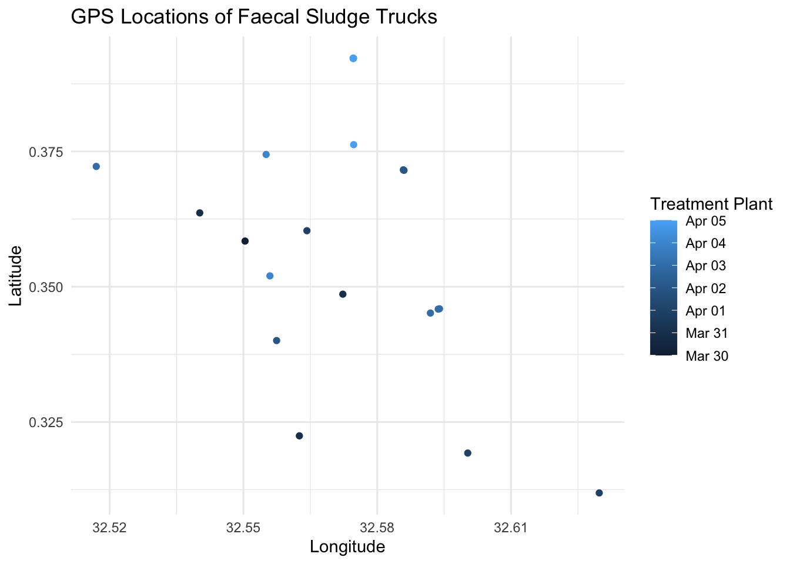

The goal of fslogisticskampala is to provide data sources on faecal sludge transporting logistics in Kampala, Uganda collected from 30th March 2015 until 25th June 2015.
Installation
You can install the development version of fslogisticskampala from GitHub with:
# install.packages("devtools")
devtools::install_github("openwashdata/fslogisticskampala")
## Run the following code in console if you don't have the packages
## install.packages(c("dplyr", "knitr", "readr", "stringr", "gt", "kableExtra"))
library(dplyr)
library(knitr)
library(readr)
library(stringr)
library(gt)
library(kableExtra)Alternatively, you can download the individual datasets as a CSV or XLSX file from the table below.
| dataset | CSV | XLSX |
|---|---|---|
| trips | Download CSV | Download XLSX |
| trucks | Download CSV | Download XLSX |
Data
The package provides access to two datasets trips and trucks.
trips
The dataset trips contains data about the GPS locations of faecal sludge trucks collecting sludge from pit latrines and septic tanks in Kampala, Uganda. Each trip is recorded with a unique identifier, the numberplate of the truck, the date and time of the record. Data was collected from 30th March 2015 until 25th June 2015. It has 5653 observations and 7 variables
trips |>
head(3) |>
gt::gt() |>
gt::as_raw_html()| fid | numberplate | date | time | lat | lon | plant |
|---|---|---|---|---|---|---|
For an overview of the variable names, see the following table.
| variable_name | variable_type | description |
|---|---|---|
| fid | numeric | Running ID for each recorded GPS location of a truck. |
| numberplate | character |
Numberplate of the truck, can be joined with trucks resource.
|
| date | Date | Date of the record in ISO 8601 format. |
| time | c(“hms”, “difftime”) | Time of the record in hours, minutes, seconds. |
| lat | numeric | Latitude of the record. |
| lon | numeric | Longitude of the record. |
| plant | character | Treatment plant that the truck delivered faecal sludge to. |
trucks
The dataset trucks contains data about additional information on the volume of each truck used in the dataset trips. It has 35 observations and 2 variables
trucks |>
head(3) |>
gt::gt() |>
gt::as_raw_html()| numberplate | volume |
|---|---|
For an overview of the variable names, see the following table.
| variable_name | variable_type | description |
|---|---|---|
| numberplate | character |
Numberplate of the truck, can be joined with trips resource.
|
| volume | numeric | Volume of the truck in cubic meters. |
Example
library(fslogisticskampala)
library(ggplot2)
library(lubridate)
aus <- trips |>
dplyr::filter(numberplate == "AUS 119X") |>
dplyr::filter(date < ymd("2015-04-06"))
ggplot(aus, aes(x = lon, y = lat, color = date)) +
geom_point() +
labs(title = "GPS Locations of Faecal Sludge Trucks",
x = "Longitude",
y = "Latitude",
color = "Treatment Plant") +
theme_minimal()
# Provide some example code hereLicense
Data are available as CC-BY.
Citation
Please cite this package using:
citation("fslogisticskampala")
#> To cite package 'fslogisticskampala' in publications use:
#>
#> Schöbitz L (2024). _fslogisticskampala: Data on faecal sludge
#> transporting logistics in Kampala, Uganda_. R package version
#> 0.0.0.9000, <https://github.com/openwashdata/fslogisticskampala>.
#>
#> A BibTeX entry for LaTeX users is
#>
#> @Manual{,
#> title = {fslogisticskampala: Data on faecal sludge transporting logistics in Kampala, Uganda},
#> author = {Lars Schöbitz},
#> year = {2024},
#> note = {R package version 0.0.0.9000},
#> url = {https://github.com/openwashdata/fslogisticskampala},
#> }